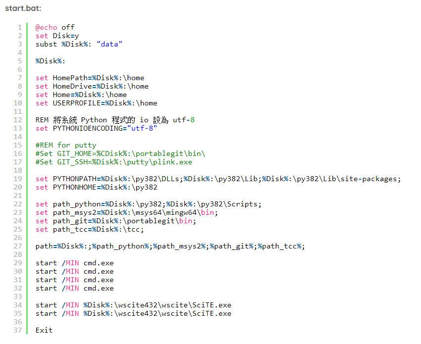

week <<
Previous Next >> week5~8
week1~4
week1
建立倉儲
week2
分組作業 亂數分組
先到about->grouping->Dart source code for random grouping
裡面左上有三行分別是Dart Html Css
點Html，把第二行的網址改掉，改成https://s1.mde.nfu.edu.tw:7443/?semester=1082&courseno=0780乙班名單，就完成了。
ps:dart不支援http，記得要用https
可攜式升3.8.2
下載:1.Windows x86-64 executable installer
2.full 64-bit download
3.msys2-x86_64-20190524.exe
4.64-bit Git for Windows Portable
建立一個資料夾cd20，在裡面再新增一個資料夾data，再新增的資料夾裡再新增一個資料夾py382
把下載1扔進py382裡面，2扔去data並且改名為wscite，3丟去data裡面，在data裡面再建一個資料夾portablegit (portablegit跟py382在同一個資料夾裡)把4丟進portablegit。
編譯SciTE，啟動SciTE後Options->Open Global Option File
開行數，把139跟300前的#去掉，在301行前加上#。
用SciTE建立新的start.bat
建立stop.bat
到https://bootstrap.pypa.io/get-pip.py裡，直接另存新檔到data裡
執行star.bat
執行這兩行指令python get-pip.py跟pip install flask bs4 lxml pelican markdown flask_cors leo
week3
一部分翻譯，在倉儲的downloads裡面
week4
week <<
Previous Next >> week5~8